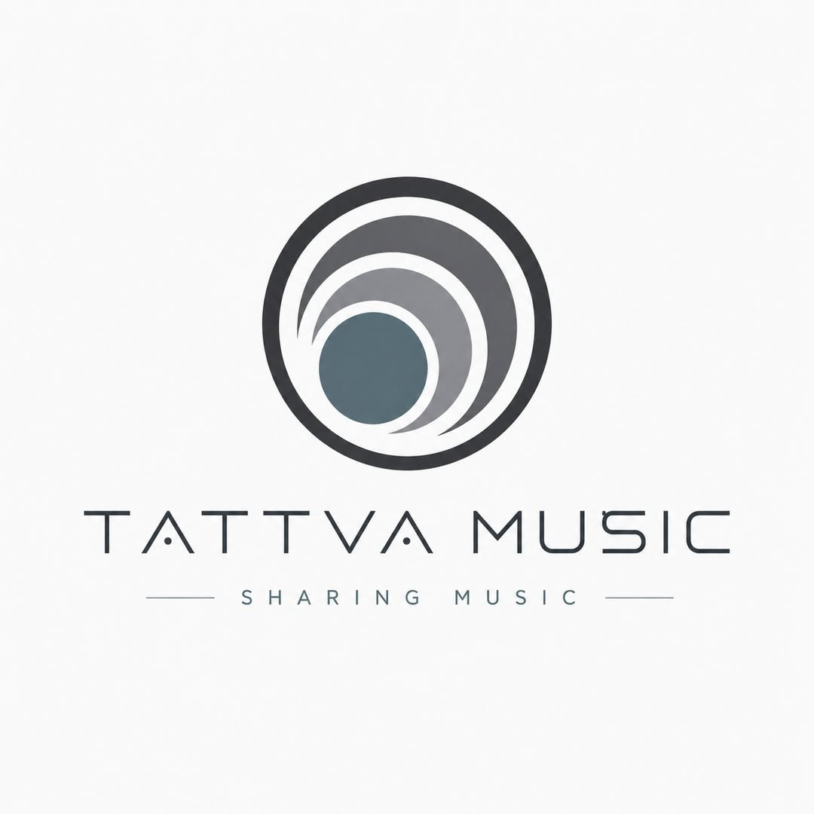

Tattva Music — つくる側のメキシコの試作品
2012 年の夏に創設された Tattva Music は、ただのレコード・レーベルだったことは一度もありません。テクノロジーを輸入するだけでなく自ら築くメキシコを思い描く試みであり、独自のアプリ、ストア、デジタル・アイデンティティを目指した文化ブランドでした。ビジネスとしては苦戦し、ビジョンとしては成功しました。そして眠りについても、止まることはありませんでした。

創設 — 2012 年の夏
長いあいだ温めてきた思いを、2012 年の夏、ついに形にして Tattva Music を創設しました。ロゴ、配色、書体は友人の Leonor Hernández がつくってくれました。彼女はあらゆる段階で、技術面でも仕事の面でもプロジェクトを支えてくれました。サンスクリット語の名前 tattva、「ものごとの本質」は、飾りではなく約束でした。
けれどもここで語りたいのは、所属アーティストやディスコグラフィーのことではありません。それは音楽のページにあります。これは Tattva Music が何になろうとしていたか、そしてお金にはならなかったのに、なぜ今も私にとって大切なのかという物語です。
レーベル以上のもの
伝統的な意味で「レーベルを持つ」ことはひとつのことです。曲をリリースし、Beatport に上げ、シーンを回り、アーティストと契約し、ブランドを宣伝する。けれども「レーベルの iOS アプリを自分たちでつくろう」と言うのは、まったく別のことです。それはもう音楽だけではありませんでした。文化 + ソフトウェア + ブランド + 流通 + デジタル・アイデンティティでした。
テクノロジーがしばしば輸入品として消費される国で、つまりアメリカのプラットフォーム、アジアのハードウェア、海外の SaaS、グローバル・ブランドとして消費される国で、Tattva のチームは珍しいことをしていました。メキシコの文化ブランドが、自前のテクノロジー層を持とうとしていたのです。
「なぜメキシコのレーベルは、他人のプラットフォームを使うことだけに甘んじなければならないのか。なぜ自分たちのアプリ、ブランド、カタログ、体験、物語、テクノロジーを持てないのか。なぜメキシコは組み立て、転売し、消費し、真似することしかしてはいけないのか。」
消費するだけでなく、つくる側のメキシコ
たしかに、メキシコには才能があり、とくにフィンテックやデジタル・サービスでは注目すべきスタートアップもすでにあります。まったくの砂漠ではありません。けれども構造的には、知識を世界的なテクノロジー・ブランドに変える国々からはまだ遠いところにいます。メキシコは 2025 年のグローバル・イノベーション・インデックスで 139 経済圏中 58 位です。WIPO はこの順位を、「賢い人がいる」ことではなく、イノベーションの能力として測っています。研究開発費も同じことを語ります。世界銀行によれば 2023 年の世界平均は GDP の約 2.6%、OECD 平均は約 2.93% ですが、メキシコはそれを大きく下回っています。
だから Tattva Music がビジネスとして勝てなかったとしても、その身振りは先見的でした。経済的には失敗したかもしれません。けれども概念としては、とても力強い方向を指していたのです。
自分だけの小さなエコシステムをつくる
Tattva Music は、「自分は DJ だ」というところにとどまらないための試みのひとつでした。私はそれをレコード・レーベルへ、次に自前のオンライン・ストアへ、次に自前のアプリへ、さらにソフトウェアへ、そして総合的なマルチメディア企業という構想へと押し広げました。いつものように、何も無駄にしないように。どんな経験も置き去りにしないように。
- レーベル — メキシコと世界のアーティストの家。
- ストア — 他人のマーケットプレイスだけでなく、自前のオンライン・ストア。
- アプリ — レーベルのネイティブ iOS アプリ。これが転換点でした。
- ソフトウェア — このアプリが、ソフトウェアに戻ることを考え始めるきっかけになりました。
- マルチメディア — オーディオ・ソフトウェア、映像、ビデオゲーム、より広い文化企業。
ソフトウェアに戻り、レーベルをもっと大きなものにすることを思い描かせてくれたのは、まさにあの Tattva Music のアプリでした。Tattva Music は、自分だけの小さなエコシステムを築こうとした最初の試みのひとつです。もうひとつの国の試作品であり、アーティストがコンテンツをつくるだけでなく、テクノロジー、ブランド、流通、知的財産までも築くメキシコの試作品でした。
ビジネスとしての失敗、ビジョンとしての成功
Tattva Music は私を豊かにはしなかったかもしれません。実際、この事業のせいで信用情報機関のブラックリストに載ることになりました。けれども、お金で報いてくれないプロジェクトが、アイデンティティや方向性や未来の能力で報いてくれることがあります。Tattva Music は、のちに私がなれた人間をつくる助けになりました。エンジニア、システム・アーキテクト、技術面接官、AI を活用したパイプラインの構築者です。
そこには静かな皮肉もあります。まさにその能力を鍛えてくれたからこそ、この事業が掘った経済的な穴から思っていたより早く抜け出し、その後、本当に豊かになることができたのです。
「Tattva Music はビジネスとしては失敗したけれど、ビジョンとしては失敗しなかった。それはもうひとつの国の試作品だった。」
再始動 — 2026 年
Tattva Music は死にませんでした。さなぎのように眠っていたのです。誰も見ていないあいだも、カタログは世界中で再生され続け、レーベルが築いた友情は手紙を書き続けました。アーティストはデモを送り続け、エージェンシーは公演の日程を提案し続け、ある日本のアーティストはレーベルが目を覚ました日を祝ってくれました。
2026 年、Tattva はずっと目指してきたものとして戻ってきます。自前のテクノロジーを持つ文化ブランドです。新しいサブレーベルの親レーベルとなり、それぞれが音楽のひとつの方向に焦点を合わせます。アーティストとは公正なライセンスで契約します。原盤はアーティストのもの、契約期間が終われば権利は戻り、プロモーションはアーティストが選びます。ツールと運営は AI で動き、Forza 2.0 はその AI ネイティブなラインです。契約するアーティストは、AI を使うかどうかも含めて、自分のやり方で音楽をつくります。Tattva で AI が担うこと：
- AI を活用した作曲 — Forza 2.0 のカタログと、レーベルのクリエイティブ・ディレクション。
- AI エンジニアリング — AI システムで構築したリリース・パイプライン、音声分析、レーベル運営。
- AI を活用したソフトウェア開発 — レーベルが使うすべてのツールを、AI と組んで書いています。
- AI を活用したものづくり — 作業台の上の電子工作から、レーベル自身のシンセサイザーをホストするリアルタイム・オーディオ OS、tānaOS まで。
AI を活用したリリースは、すべてそのことを明示します。透明性も、音の一部です。

開いたままの扉
いつか、やり残した音楽の物語の続きを始めるかもしれません。けれどもそうするなら、それもまたテクノロジーと文化のプロジェクトになるでしょう。後戻りではなく、より良い道具で同じ考えを進めることです。
Tattva はふたたび耳を澄ませています。国境を越えるエレクトロニック・ミュージックをつくっているなら、デモを送ってください。すべてに返事をします。